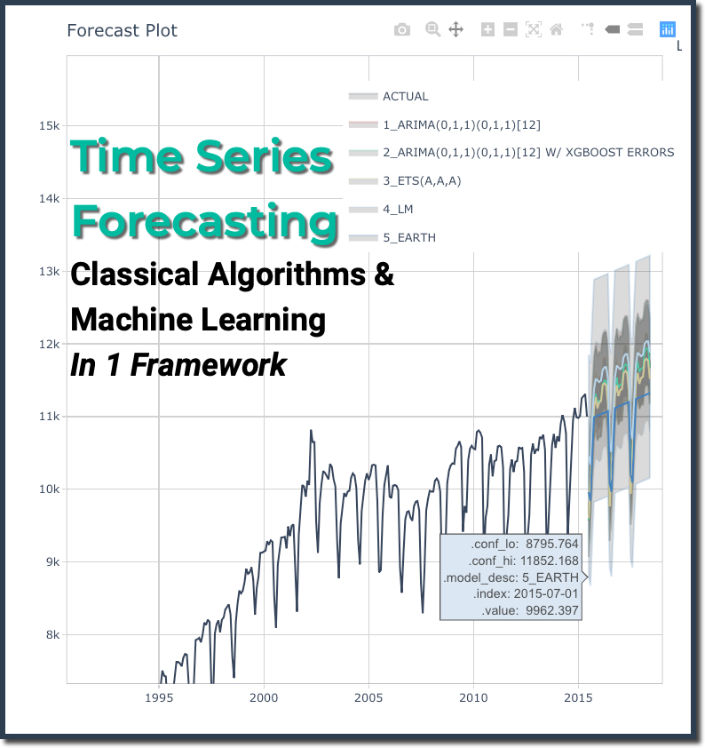
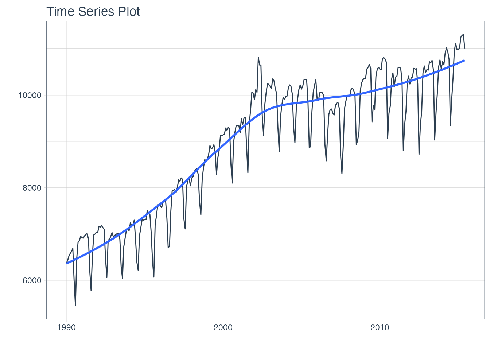
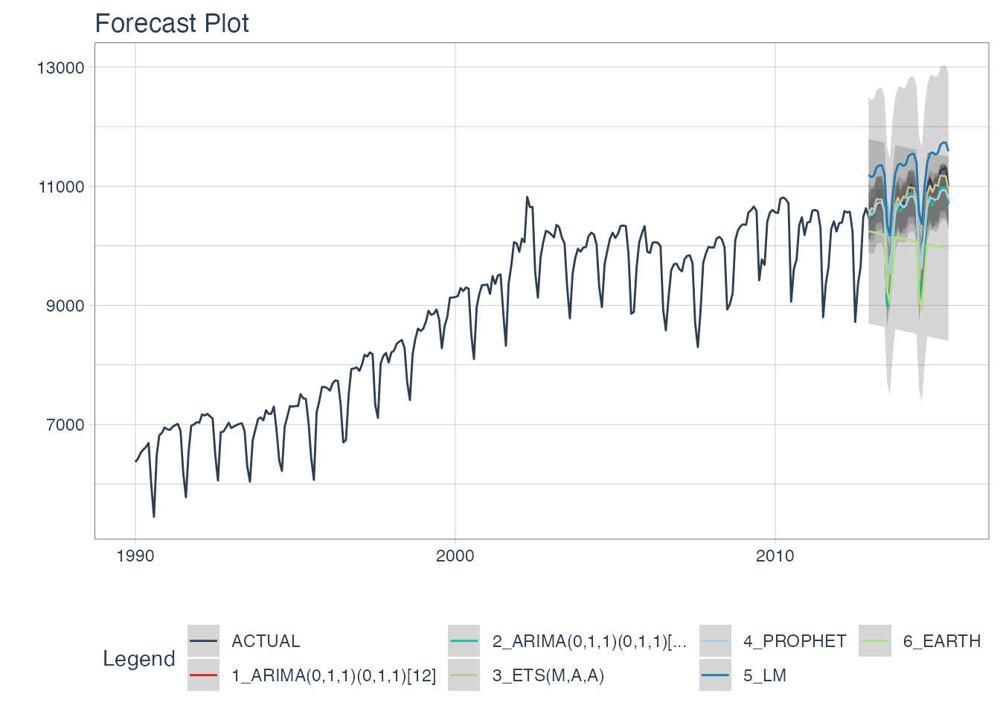
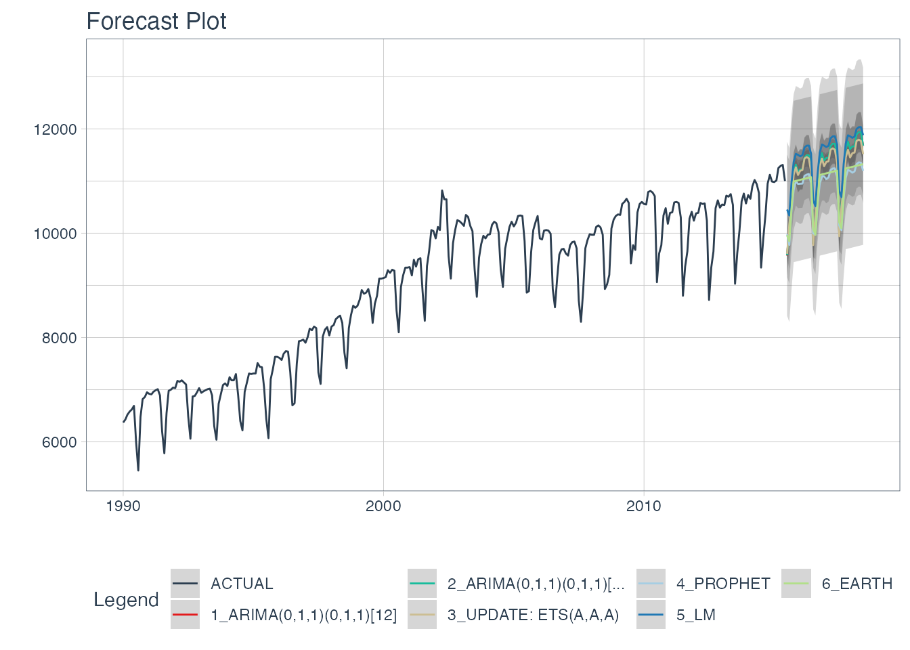

Getting Started with Modeltime
Source:vignettes/getting-started-with-modeltime.Rmd
getting-started-with-modeltime.Rmd
Forecasting with tidymodels made easy! This short tutorial shows how you can use:
-
Modeltime models like
arima_reg(),arima_boost(),exp_smoothing(),prophet_reg(),prophet_boost(), and more -
Parsnip models like
linear_reg(),mars(),svm_rbf(),rand_forest(),boost_tree()and more
To perform classical time series analysis and machine learning in one framework! See “Model List” for the full list of modeltime models.
The Modeltime Workflow
Here’s the general process and where the functions fit.

The Modeltime Workflow
Just follow the modeltime workflow, which is detailed in 6 convenient steps:
- Collect data and split into training and test sets
- Create & Fit Multiple Models
- Add fitted models to a Model Table
- Calibrate the models to a testing set.
- Perform Testing Set Forecast & Accuracy Evaluation
- Refit the models to Full Dataset & Forecast Forward
Let’s go through a guided tour to kick the tires on modeltime.
Time Series Forecasting Example
Load libraries to complete this short tutorial.
library(tidymodels)
library(modeltime)
library(tidyverse)
library(lubridate)
library(timetk)
# This toggles plots from plotly (interactive) to ggplot (static)
interactive <- FALSEStep 1 - Collect data and split into training and test sets.
# Data
m750 <- m4_monthly %>% filter(id == "M750")We can visualize the dataset.
m750 %>%
plot_time_series(date, value, .interactive = interactive)
Let’s split the data into training and test sets using initial_time_split()
# Split Data 80/20
splits <- initial_time_split(m750, prop = 0.9)Step 2 - Create & Fit Multiple Models
We can easily create dozens of forecasting models by combining modeltime and parsnip. We can also use the workflows interface for adding preprocessing! Your forecasting possibilities are endless. Let’s get a few basic models developed:
- ARIMA
- Exponential Smoothing
- Linear Regression
- MARS (Multivariate Adaptive Regression Splines)
Important note: Handling Date Features
Modeltime models (e.g. arima_reg()) are created with a date or date time feature in the model. You will see that most models include a formula like fit(value ~ date, data).
Parsnip models (e.g. linear_reg()) typically should not have date features, but may contain derivatives of dates (e.g. month, year, etc). You will often see formulas like fit(value ~ as.numeric(date) + month(date), data).
Model 1: Auto ARIMA (Modeltime)
First, we create a basic univariate ARIMA model using “Auto Arima” using arima_reg()
# Model 1: auto_arima ----
model_fit_arima_no_boost <- arima_reg() %>%
set_engine(engine = "auto_arima") %>%
fit(value ~ date, data = training(splits))
#> frequency = 12 observations per 1 yearModel 2: Boosted Auto ARIMA (Modeltime)
Next, we create a boosted ARIMA using arima_boost(). Boosting uses XGBoost to model the ARIMA errors. Note that model formula contains both a date feature and derivatives of date - ARIMA uses the date - XGBoost uses the derivatives of date as regressors
Normally I’d use a preprocessing workflow for the month features using a function like step_timeseries_signature() from timetk to help reduce the complexity of the parsnip formula interface.
# Model 2: arima_boost ----
model_fit_arima_boosted <- arima_boost(
min_n = 2,
learn_rate = 0.015
) %>%
set_engine(engine = "auto_arima_xgboost") %>%
fit(value ~ date + as.numeric(date) + factor(month(date, label = TRUE), ordered = F),
data = training(splits))
#> frequency = 12 observations per 1 yearModel 3: Exponential Smoothing (Modeltime)
Next, create an Error-Trend-Season (ETS) model using an Exponential Smoothing State Space model. This is accomplished with exp_smoothing().
# Model 3: ets ----
model_fit_ets <- exp_smoothing() %>%
set_engine(engine = "ets") %>%
fit(value ~ date, data = training(splits))
#> frequency = 12 observations per 1 yearModel 4: Prophet (Modeltime)
We’ll create a prophet model using prophet_reg().
# Model 4: prophet ----
model_fit_prophet <- prophet_reg() %>%
set_engine(engine = "prophet") %>%
fit(value ~ date, data = training(splits))
#> Disabling weekly seasonality. Run prophet with weekly.seasonality=TRUE to override this.
#> Disabling daily seasonality. Run prophet with daily.seasonality=TRUE to override this.Model 5: Linear Regression (Parsnip)
We can model time series linear regression (TSLM) using the linear_reg() algorithm from parsnip. The following derivatives of date are used:
-
Trend: Modeled using
as.numeric(date) -
Seasonal: Modeled using
month(date)
# Model 5: lm ----
model_fit_lm <- linear_reg() %>%
set_engine("lm") %>%
fit(value ~ as.numeric(date) + factor(month(date, label = TRUE), ordered = FALSE),
data = training(splits))Model 6: MARS (Workflow)
We can model a Multivariate Adaptive Regression Spline model using mars(). I’ve modified the process to use a workflow to standardize the preprocessing of the features that are provided to the machine learning model (mars).
# Model 6: earth ----
model_spec_mars <- mars(mode = "regression") %>%
set_engine("earth")
recipe_spec <- recipe(value ~ date, data = training(splits)) %>%
step_date(date, features = "month", ordinal = FALSE) %>%
step_mutate(date_num = as.numeric(date)) %>%
step_normalize(date_num) %>%
step_rm(date)
wflw_fit_mars <- workflow() %>%
add_recipe(recipe_spec) %>%
add_model(model_spec_mars) %>%
fit(training(splits))OK, with these 6 models, we’ll show how easy it is to forecast.
Step 3 - Add fitted models to a Model Table.
The next step is to add each of the models to a Modeltime Table using modeltime_table(). This step does some basic checking to make sure each of the models are fitted and that organizes into a scalable structure called a “Modeltime Table” that is used as part of our forecasting workflow.
We have 6 models to add. A couple of notes before moving on:
- Note that some of the models have tunable parameters.
- It’s expected that tuning and parameter selection is performed prior to incorporating into a Modeltime Table.
- If you try to add an unfitted model, the
modeltime_table()will complain (throw an informative error) saying you need tofit()the model.
models_tbl <- modeltime_table(
model_fit_arima_no_boost,
model_fit_arima_boosted,
model_fit_ets,
model_fit_prophet,
model_fit_lm,
wflw_fit_mars
)
models_tbl
#> # Modeltime Table
#> # A tibble: 6 x 3
#> .model_id .model .model_desc
#> <int> <list> <chr>
#> 1 1 <fit[+]> ARIMA(0,1,1)(0,1,1)[12]
#> 2 2 <fit[+]> ARIMA(0,1,1)(0,1,1)[12] W/ XGBOOST ERRORS
#> 3 3 <fit[+]> ETS(M,A,A)
#> 4 4 <fit[+]> PROPHET
#> 5 5 <fit[+]> LM
#> 6 6 <workflow> EARTHStep 4 - Calibrate the model to a testing set.
Calibrating adds a new column, .calibration_data, with the test predictions and residuals inside. A few notes on Calibration:
- Calibration is how confidence intervals and accuracy metrics are determined
- Calibration Data is simply forecasting predictions and residuals that are calculated from out-of-sample data.
- After calibrating, the calibration data follows the data through the forecasting workflow.
calibration_tbl <- models_tbl %>%
modeltime_calibrate(new_data = testing(splits))
calibration_tbl
#> # Modeltime Table
#> # A tibble: 6 x 5
#> .model_id .model .model_desc .type .calibration_da…
#> <int> <list> <chr> <chr> <list>
#> 1 1 <fit[+]> ARIMA(0,1,1)(0,1,1)[12] Test <tibble [31 × 4…
#> 2 2 <fit[+]> ARIMA(0,1,1)(0,1,1)[12] W/ XGBOOS… Test <tibble [31 × 4…
#> 3 3 <fit[+]> ETS(M,A,A) Test <tibble [31 × 4…
#> 4 4 <fit[+]> PROPHET Test <tibble [31 × 4…
#> 5 5 <fit[+]> LM Test <tibble [31 × 4…
#> 6 6 <workflow> EARTH Test <tibble [31 × 4…Step 5 - Testing Set Forecast & Accuracy Evaluation
There are 2 critical parts to an evaluation.
- Visualizing the Forecast vs Test Data Set
- Evaluating the Test (Out of Sample) Accuracy
5A - Visualizing the Forecast Test
Visualizing the Test Error is easy to do using the interactive plotly visualization (just toggle the visibility of the models using the Legend).
calibration_tbl %>%
modeltime_forecast(
new_data = testing(splits),
actual_data = m750
) %>%
plot_modeltime_forecast(
.legend_max_width = 25, # For mobile screens
.interactive = interactive
)
From visualizing the test set forecast:
- Models 1&2: ARIMA & ARIMA Boost are performing well. Both models have “auto” components because we used Auto ARIMA. The XGBoost component has parameters that were specified. We can possibly get better accuracy by tuning, but because the ARIMA component is working well on this data, additional improvement may be low.
- Model 3: ETS(M,A,A) is performing the best. The 80% confidence interval is the most narrow of the bunch, indicating the hold out set is modeled well.
- Model 4: PROPHET is comparable to the ARIMA models, but has a slightly wider test error confidence interval.
- Model 5: LM is over-shooting the local trend. This is because the trend component is a simple linear line, which doesn’t account for the change points.
- Model 6: EARTH is overfitting the local trend. This is because we did not tune the number of change points, so the algorithm is auto-calculating the change points.
5B - Accuracy Metrics
We can use modeltime_accuracy() to collect common accuracy metrics. The default reports the following metrics using yardstick functions:
-
MAE - Mean absolute error,
mae() -
MAPE - Mean absolute percentage error,
mape() -
MASE - Mean absolute scaled error,
mase() -
SMAPE - Symmetric mean absolute percentage error,
smape() -
RMSE - Root mean squared error,
rmse() -
RSQ - R-squared,
rsq()
These of course can be customized following the rules for creating new yardstick metrics, but the defaults are very useful. Refer to default_forecast_accuracy_metrics() to learn more.
To make table-creation a bit easier, I’ve included table_modeltime_accuracy() for outputing results in either interactive (reactable) or static (gt) tables.
calibration_tbl %>%
modeltime_accuracy() %>%
table_modeltime_accuracy(
.interactive = interactive
)| Accuracy Table | ||||||||
|---|---|---|---|---|---|---|---|---|
| .model_id | .model_desc | .type | mae | mape | mase | smape | rmse | rsq |
| 1 | ARIMA(0,1,1)(0,1,1)[12] | Test | 151.33 | 1.41 | 0.52 | 1.43 | 197.71 | 0.93 |
| 2 | ARIMA(0,1,1)(0,1,1)[12] W/ XGBOOST ERRORS | Test | 147.04 | 1.37 | 0.50 | 1.39 | 191.84 | 0.93 |
| 3 | ETS(M,A,A) | Test | 77.00 | 0.73 | 0.26 | 0.73 | 90.27 | 0.98 |
| 4 | PROPHET | Test | 177.51 | 1.70 | 0.61 | 1.70 | 234.65 | 0.88 |
| 5 | LM | Test | 629.12 | 6.01 | 2.15 | 5.81 | 657.19 | 0.91 |
| 6 | EARTH | Test | 709.83 | 6.59 | 2.42 | 6.86 | 782.82 | 0.55 |
From the accuracy metrics:
- Model 3: ETS is clearly the winner here with MAE of 77
- Model 6: MARS is over-fitting the local trend. This comes out in the R-Squared of 0.55.
Step 6 - Refit to Full Dataset & Forecast Forward
The final step is to refit the models to the full dataset using modeltime_refit() and forecast them forward.
refit_tbl <- calibration_tbl %>%
modeltime_refit(data = m750)
refit_tbl %>%
modeltime_forecast(h = "3 years", actual_data = m750) %>%
plot_modeltime_forecast(
.legend_max_width = 25, # For mobile screens
.interactive = interactive
)
Refitting - What happened?
The models have all changed! (Yes - this is the point of refitting)
- The LM model looks much better now because the linear trend line has now been fit to new data that follows the longer term trend.
- The EARTH model has a trend that is more representative of the near-term trend.
- The PROPHET model has a trend that is very similar to the EARTH model (this is because both modeling algorithms use changepoints to model trend, and prophet’s auto algorithm seems to be doing a better job at adapting).
- The ETS model has changed from (M,A,A) to (A,A,A).
- The ARIMA model have been updated and better capture the upswing.
This is the (potential) benefit of refitting.
More often than not refitting is a good idea. Refitting:
- Retrieves your model and preprocessing steps
- Refits the model to the new data
- Recalculates any automations. This includes:
- Recalculating the long-term trend for Linear Model
- Recalculating the changepoints for the Earth Model
- Recalculating the ARIMA and ETS parameters
- Preserves any parameter selections. This includes:
- XGBoost Parameters in the Boosted ARIMA
min_n = 2,learn_rate = 0.015. - Any other defaults that are not automatic calculations are used.
- XGBoost Parameters in the Boosted ARIMA
Learning More
My Talk on High-Performance Time Series Forecasting
Time series is changing. Businesses now need 10,000+ time series forecasts every day. This is what I call a High-Performance Time Series Forecasting System (HPTSF) - Accurate, Robust, and Scalable Forecasting.
You need to provide a “High-Performance Time Series Forecasting System” (HPTSF System). High-Performance Forecasting Systems will save companies MILLIONS of dollars.
I teach how to build a HPTFS System in my High-Performance Time Series Forecasting Course. If interested in learning Scalable High-Performance Forecasting Strategies then take my course. You will learn:
- Time Series Machine Learning (cutting-edge) with
Modeltime- 30+ Models (Prophet, ARIMA, XGBoost, Random Forest, & many more) - NEW - Deep Learning with
GluonTS(Competition Winners) - Time Series Preprocessing, Noise Reduction, & Anomaly Detection
- Feature engineering using lagged variables & external regressors
- Hyperparameter Tuning
- Time series cross-validation
- Ensembling Multiple Machine Learning & Univariate Modeling Techniques (Competition Winner)
- Scalable Forecasting - Forecast 1000+ time series in parallel
- and more.